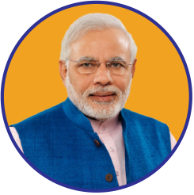

About
-

March 2017
Motivation
On 17th April 2017, Prie Minister Narendra Modi hints at rules for doctors to prescribe Generic Medicines. As Name of generic medicines having the same constituents as that of brand medicine is not known to all the doctors and patients, a recommender system is necessary. So Online Generic Medicine Recmmender should be Built.
-
April 2017
An Agency is Born
Jan Aushadi powered by National Infomatrics Center which has list of all generic drugs.As it is Started recently it has very less number of medicines and Recommendation system is also not there.
-
.jpg)
December 2017
Transition to Full Service
Generic Medico a website which helps users to find generic medicines having the same constituents as that of brand Medicines giving the dosage,indegrients,price ,seide effects,etc. It is a Free Service Website
-

Our Team
Our Team members are Dr. Nupur Giri, Satish Fulwani, Rahul Nagdev, Nisha Megnani, Meenu Bhatia. We have done this project as our Final Year Project.
-